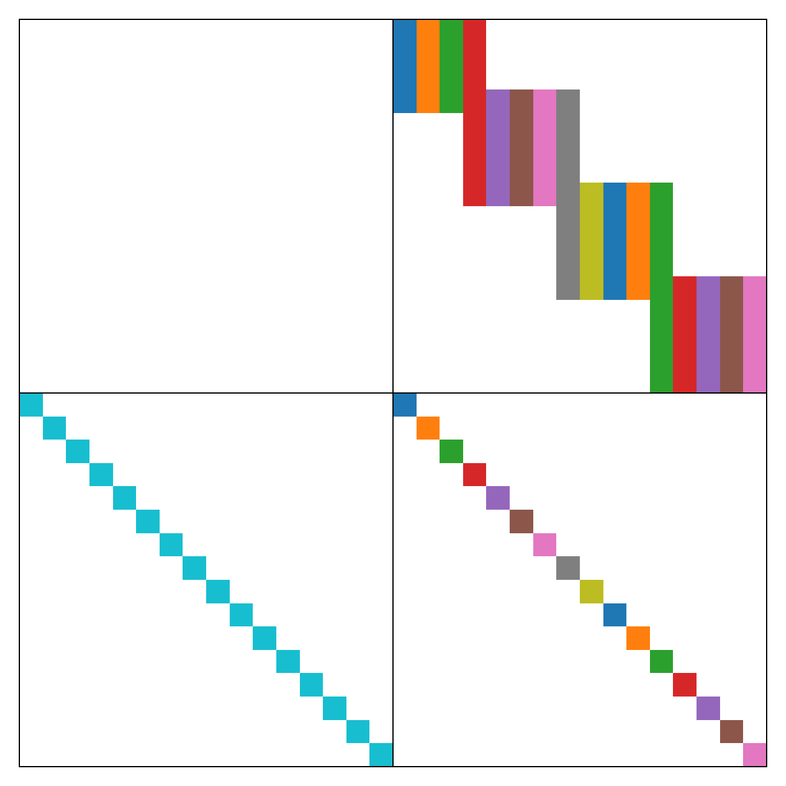

Sparse Jacobian evaluation for implicit semidiscretizations
By default, semidiscretize supplies a sparse Jacobian prototype and a column colouring to OrdinaryDiffEq.jl. The prototype specifies which structurally nonzero matrix entries are stored, while the time integration algorithm's autodiff option selects how their values are computed (e.g., via finite differences or automatic differentiation).
In mixed form, the state vector (not including passive diagnostic variables) is $\boldsymbol{y}=(\boldsymbol{\Theta},\boldsymbol{\Psi})^\mathrm{T}$, where $\boldsymbol{\Theta}$ contains nodal water-content values and $\boldsymbol{\Psi}$ contains the nodal pressure-head values. Let $\boldsymbol{\mathcal{R}}(\boldsymbol{\Psi},t)$ denote the spatial residual and $\boldsymbol{\vartheta}(\boldsymbol{\Psi})$ the water content evaluated from pressure head using the constitutive model. The residual and its Jacobian sparsity pattern are then given by
\[\boldsymbol{\mathcal{F}}(\boldsymbol{y},t) = \begin{bmatrix} \boldsymbol{\mathcal{R}}(\boldsymbol{\Psi},t) \\ \boldsymbol{\Theta}-\boldsymbol{\vartheta}(\boldsymbol{\Psi}) \end{bmatrix}, \quad \operatorname{pattern}\left(\frac{\partial\boldsymbol{\mathcal{F}}} {\partial\boldsymbol{y}}\right) = \begin{bmatrix} \boldsymbol{0} & \boldsymbol{S} \\ \boldsymbol{I} & \boldsymbol{I} \end{bmatrix}, \quad \boldsymbol{S} = \operatorname{pattern}\left( \frac{\partial\boldsymbol{\mathcal{R}}}{\partial\boldsymbol{\Psi}}\right),\]
where the lower-right $\boldsymbol{I}$ denotes a diagonal sparsity pattern. The corresponding Jacobian block contains the negative nodal water capacities.
The prototype jac_prototype stores explicit zeros at the positions allowed by this pattern. OrdinaryDiffEq.jl fills these positions with derivative values and combines the Jacobian with the mass matrix $\boldsymbol{M}$ to form the Rosenbrock matrix:
\[\boldsymbol{M}-\gamma\Delta t^n \frac{\partial\boldsymbol{\mathcal{F}}}{\partial\boldsymbol{y}} (\boldsymbol{y}^n,t^n).\]
We now construct and visualize the sparsity pattern for a small mixed Richards problem with $K=4$ elements and polynomial degree $N=3$, following examples/elixirs/elixir_richards_manufactured_solution.jl:
using CairoMakie
using HydroTrixi
using SparseArrays
using Trixi
asset_dir = docs_generated_dir("richards_jacobian_sparsity")
problem = HydrologicProblemRichardsManufacturedSolution(tspan = (0.0, 1.0))
mesh = TreeMesh(problem.domain...; initial_refinement_level = 2, periodicity = false)
solver = DGSEM(polydeg = 3)
semi = SemidiscretizationImplicit(mesh, problem, solver;
solver_parabolic = ParabolicFormulationLocalDG(),
form = MixedForm(),
passive_variables = NoPassiveVariables())
ode = semidiscretize(semi, problem.tspan);For this one-dimensional mixed Richards discretization, the Jacobian prototype has $K(N+1)^2 + 2(N+1)(K-1) + 2K(N+1)$ stored entries. The three terms count the element-local spatial couplings, the couplings across element interfaces, and the two diagonal blocks from the constitutive constraint. We check the matrix dimensions, stored-entry count, and zero initialization below.
mesh, equations, solver, cache = Trixi.mesh_equations_solver_cache(semi.semi_base)
n_nodes = Trixi.nnodes(solver)
n_elements = Trixi.nelements(solver, cache)
n_interfaces = length(Trixi.eachinterface(solver, cache))
n_state_dofs = n_nodes * n_elements
expected_nonzeros = n_elements * n_nodes^2 + 2 * n_nodes * n_interfaces +
2 * n_state_dofs
jac_prototype = ode.f.jac_prototype
@assert size(jac_prototype) == (2 * n_state_dofs, 2 * n_state_dofs)
@assert nnz(jac_prototype) == expected_nonzeros
@assert all(iszero, nonzeros(jac_prototype))Column colouring groups Jacobian columns so that their derivatives can be computed simultaneously when their derivatives do not interfere with each other. Each column corresponds to one entry of the state vector, and its stored entries mark the residual components that may depend on that entry. Columns receive the same colour (an integer group label) only when their stored entries occupy non-overlapping rows. Thus, no residual component depends on more than one variable of a given colour.
With forward-mode automatic differentiation, we assign a derivative of one to all state variables of one colour and zero to the others. The resulting directional derivative is the sum of the Jacobian columns in that group. Since these columns have disjoint row supports, the sparsity pattern identifies which column each entry belongs to. This requires one derivative direction per colour rather than per state variable; finite differences use the same grouping for simultaneous perturbations. HydroTrixi.jl supplies the colour assigned to each column in ode.f.colorvec.
column_colors = ode.f.colorvec
n_spatial_colors = 2 * n_nodes + 1
n_colors = maximum(column_colors)
@assert column_colors[1:n_state_dofs] == fill(n_colors, n_state_dofs)
@assert column_colors[(n_state_dofs + 1):end] ==
mod1.(1:n_state_dofs, n_spatial_colors)
@assert n_colors == n_spatial_colors + 1The pressure-head columns use $2N+3$ colours, repeated in storage order. The water-content columns share one additional colour because their entries occupy distinct rows. With $K=4$ and $N=3$, this gives ten derivative directions for 32 state variables. We check that each row contains at most one stored entry of each colour.
row_indices, column_indices, _ = findnz(jac_prototype)
for row in axes(jac_prototype, 1)
row_colors = column_colors[column_indices[row_indices .== row]]
@assert allunique(row_colors)
endTo visualize the sparsity pattern and colouring together, we assign each stored Jacobian entry the colour of its column. The black lines separate the water-content and pressure-head blocks.
colored_pattern = fill(NaN, size(jac_prototype))
for (row, column) in zip(row_indices, column_indices)
colored_pattern[row, column] = column_colors[column]
end
palette = cgrad(:tab10, n_colors; categorical = true)
figure = Figure(size = (650, 650))
jacobian_axis = Axis(figure[1, 1]; aspect = DataAspect(), yreversed = true)
hidedecorations!(jacobian_axis)
heatmap!(jacobian_axis, transpose(colored_pattern); colormap = palette,
colorrange = (0.5, n_colors + 0.5))
vlines!(jacobian_axis, n_state_dofs + 0.5; color = :black, linewidth = 1)
hlines!(jacobian_axis, n_state_dofs + 0.5; color = :black, linewidth = 1)
figure_path = joinpath(asset_dir, "coloring.png")
save(figure_path, figure; px_per_unit = 2)
println("Saved $(n_colors)-colour Jacobian colouring with $(nnz(jac_prototype)) entries " *
"to " * figure_path)Saved 10-colour Jacobian colouring with 120 entries to /home/runner/work/HydroTrixi.jl/HydroTrixi.jl/docs/src/assets/generated/richards_jacobian_sparsity/coloring.png
